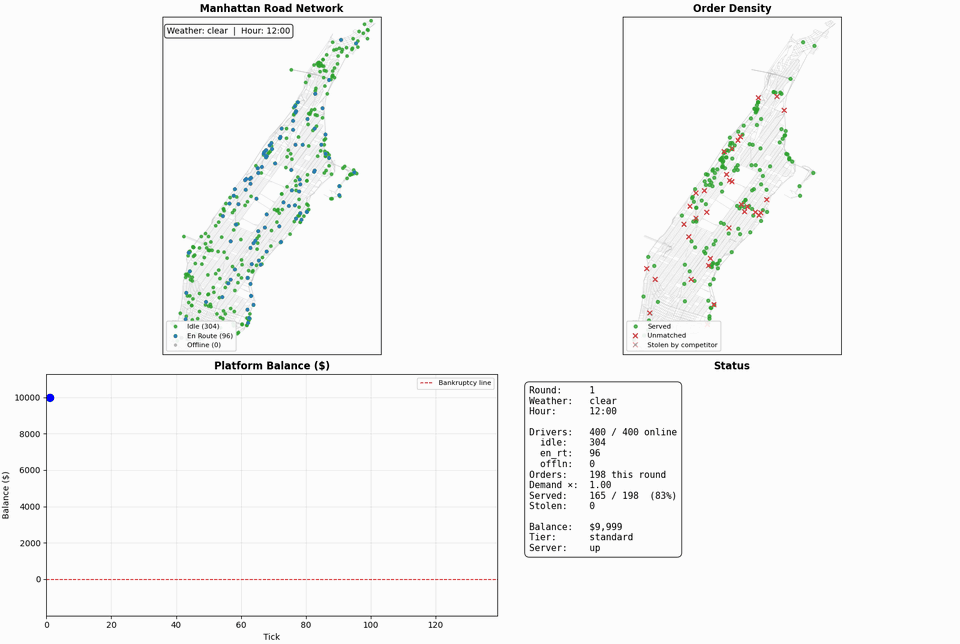
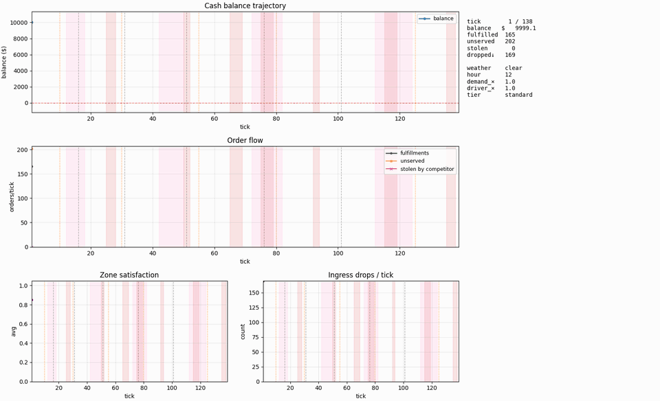
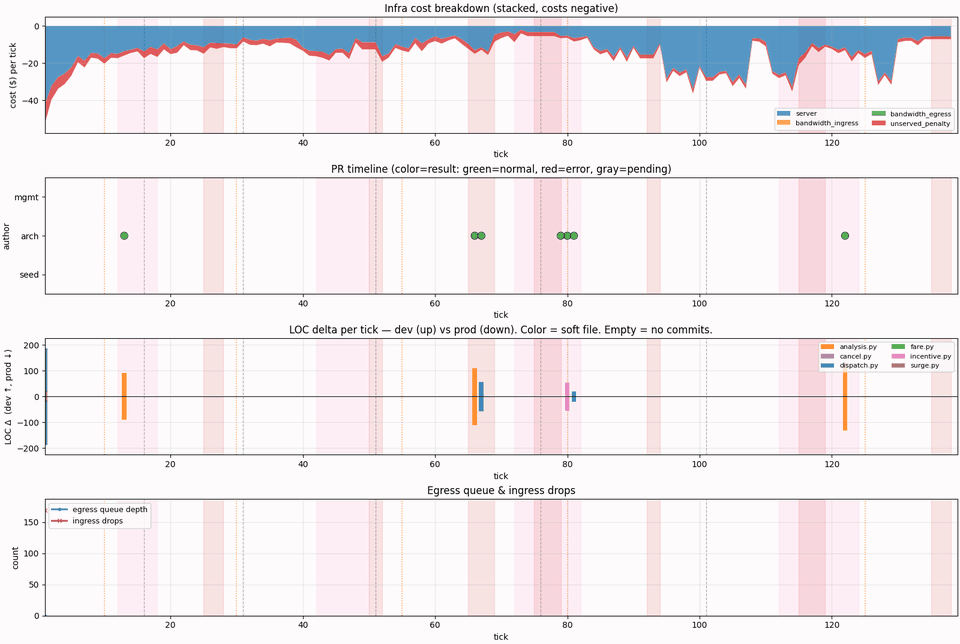
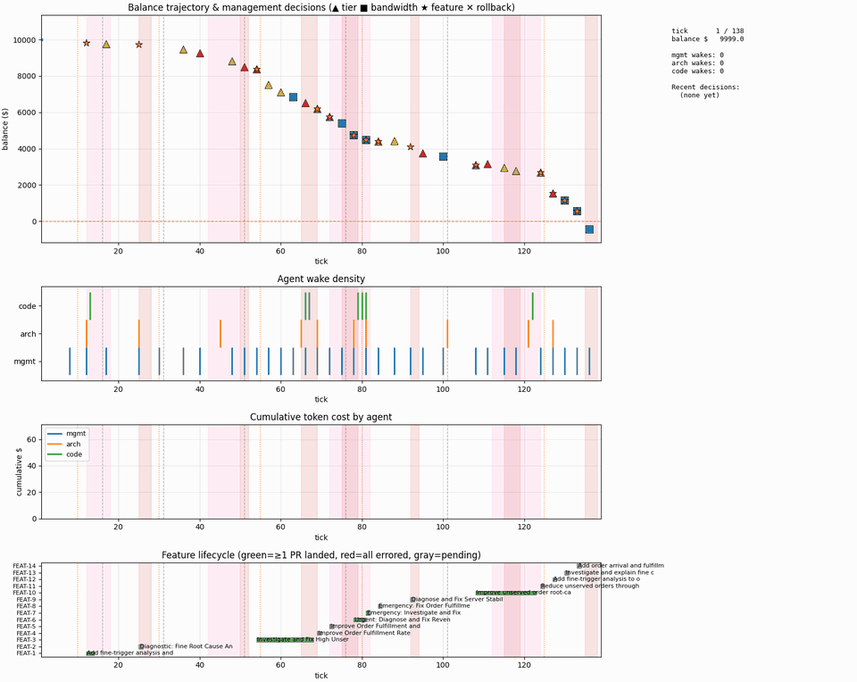
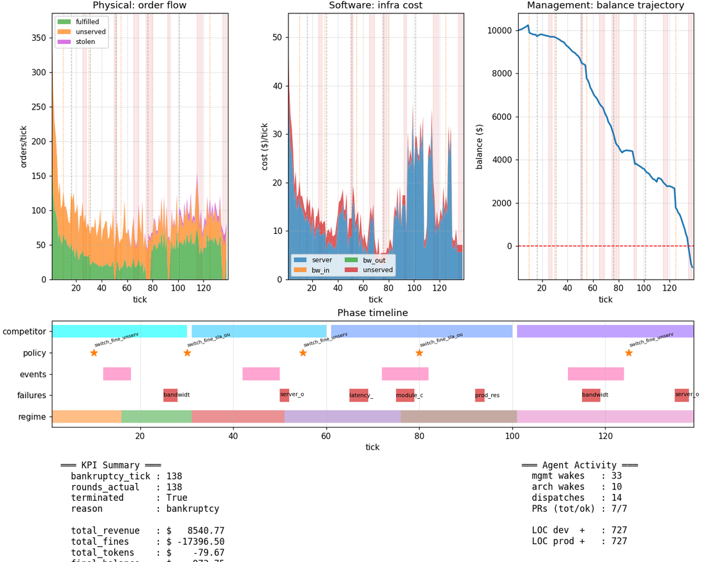

The problem问题
Most agent benchmarks hand the model a task, wait for an answer and grade it. Running a company is not like that. Decisions land in a world that keeps moving whether or not anyone is awake; the money they cost is the same money that pays for the next decision; and the code shipped tonight is what the customers meet tomorrow morning. To learn whether a team of LLM agents can keep a business alive through a bad quarter, the environment needs three properties at once: a physical world with its own dynamics, a software stack that can really break and really be fixed, and an organisation in which different roles are allowed to touch different things. This page describes one such sandbox, built to evaluate agents rather than to flatter them: a small ride-hailing platform in a box, with a street network, a server bill, a ledger, and a three-role agent team that has to run it.
大多数 agent 评测把任务递给模型，等它给出答案，然后打分。经营一家公司不是这样的：决策落在一个不管有没有人醒着都在继续运转的世界里；决策花掉的钱，正是下一个决策要用的钱；今晚上线的代码，就是明早用户碰到的东西。要知道一支 LLM agent 团队能不能带着一家公司熬过一个糟糕的季度，环境必须同时具备三个性质：一个有自身动力学的物理世界、一套真的会坏也真的能修的软件栈，以及一个不同角色被允许触碰不同东西的组织。这一页描述的就是这样一个沙盒。它是为评估 agent 而建的，不是为了让 agent 好看：一个装在盒子里的小型网约车平台，有街道网络、服务器账单、一本账，和一支必须把它经营下去的三角色 agent 团队。
Why this design这套设计的优势
The diagram is the sandbox: squares are modules, ellipses are the data artefacts that flow between them, colours are the three roles. Read it left to right: what an experiment fixes and the world it produces; the runner that owns the clock and the ledger; the team, and under each role the piece of software it is allowed to change. Every layer is real enough to push back:
这张图就是沙盒本身：方形是模块，椭圆是在模块之间流动的数据产物，颜色对应三个角色。从左到右读：一次实验固定了什么、它生成的世界；掌管时钟和账本的运行器；团队，以及每个角色正下方它被允许改动的那块软件。每一层都真实到会反抗：
- Physics first.物理层在最底下。 Drivers, riders, weather and road closures live on a real street network. Demand, travel time and blocked zones come out of that world, not out of a lookup table.司机、乘客、天气和封路都活在一张真实的街道网络上。需求、行程时间和封锁区域是从这个世界里长出来的，不是查表得到的。
- One ledger, no bailouts.一本账，没有救助。 Server tier, bandwidth, penalties for unserved orders and the agents' own token usage are all paid from the same balance. When it reaches zero, the run ends.服务器档位、带宽、未服务订单的罚金，以及 agent 自己消耗的 token，全部从同一个余额里扣。余额归零，运行结束。
- A server sandbox with a real deploy pipeline.带真实发布流程的服务器沙盒。 Code changes land in a development workspace. Only an explicit promote moves them to production, with an automatic rollback snapshot, and production code is what the next tick runs.代码改动先落在开发工作区。只有显式的 promote 才会把它推到生产环境，并自动留下回滚快照；下一个 tick 跑的是生产环境里的代码。
- A two-tier team with locked permissions.权限锁死的两层团队。 Management steers with money and natural-language requests and can never touch code. Architecture turns requests into plans and holds the only promote key. A one-shot code agent is the only thing allowed to run a shell, and only inside its own workspace.管理层用钱和自然语言需求来掌舵，永远碰不到代码；架构层把需求变成计划，握着唯一一把发布钥匙；一次性的代码 agent 是唯一能跑 shell 的角色，而且只能在自己的工作区里跑。
- Event-driven wake-ups instead of turn-taking.事件触发的唤醒，而不是轮流发言。 Agents wake on a balance drop, an unserved spike, a server incident or a new request, with a minimum interval between wakes. Attention is itself a scarce, priced resource.agent 在余额下跌、未服务订单激增、服务器故障或新需求到来时被唤醒，两次唤醒之间有最小间隔。注意力本身就是一种稀缺且有价的资源。
- Replayable environments.可重放的环境。 Regime schedules, failures and competitor moves are sampled once into a trajectory file and replayed, so two team designs face exactly the same bad quarter.市场周期、故障和竞争对手的动作被一次性采样成轨迹文件再重放，两种团队设计面对的是完全相同的一个坏季度。
- Four-layer replay.四层回放。 Every run renders into physical, software and management views that can be read side by side, so a decision can be traced from the balance curve down to the street.每次运行都会渲染成物理层、软件层和管理层的视图，可以并排阅读，一个决策能从余额曲线一路追到街道上。
What if we have an agent team to run a company?如果让一支 agent 团队来经营一家公司？
The question I keep returning to is not whether a model can fix a dispatch bug. It usually can. The question is what happens when you hand a team of such models a company: who is allowed to know what, who is allowed to change what, and at what cadence. In this sandbox the interesting failures were almost never coding failures. They were organisational. A management agent that reacts to every dip in the balance and floods the architect with requests. An architect that promotes to production faster than the world can report whether the last change helped. Three roles that each see a different slice of the truth and have to coordinate through a narrow channel of prose.
我反复回到的问题不是模型能不能修好一个派单 bug。它通常能。问题是，当你把一家公司交给一支由这样的模型组成的团队时会发生什么：谁被允许知道什么，谁被允许改什么，以什么节奏。在这个沙盒里，有意思的失败几乎从来不是写代码的失败，而是组织上的失败。一个对余额的每一次下跌都做出反应、把架构师淹没在需求里的管理 agent；一个把改动推上生产环境的速度快过世界反馈上一次改动是否有效的架构师；三个各自只看到真相一角、必须通过一条窄窄的文字通道来协作的角色。
Once code is cheap, the bottleneck moves up the org chart: to decision cadence, to release discipline, to whether anyone on the team keeps a working model of why the world is behaving as it is. My reading of the runs so far is that the tools which made the team better were the ones that made it slower and more deliberate, not the ones that made it more capable. If that holds, then "an agent team running a company" is less a scaling problem than a design problem. The org chart, the permissions and the wake-up rules are the model; the sandbox is a way of taking those design choices seriously enough to measure them.
一旦代码变得廉价，瓶颈就沿着组织架构图往上移：移到决策节奏，移到发布纪律，移到团队里有没有人维持着一个关于世界为什么这样运转的可用模型。就目前跑过的这些运行来看，我的解读是：让团队变好的工具，是让它变慢、变得更审慎的那些，而不是让它更能干的那些。如果这一点成立，那么「让 agent 团队经营公司」与其说是一个规模问题，不如说是一个设计问题。组织架构图、权限和唤醒规则本身就是模型；沙盒则是把这些设计选择当真、认真到可以去度量它们的一种方式。
1Three roles, one clock三个角色，一个时钟
The permission table and the tick loop are two views of one thing. Statically, each role is a tool whitelist: what it can read, write and never touch. Dynamically, a tick is the runner moving the world, checking triggers, waking whoever has a reason to act, and billing them. The lane diagram follows one feature request through both views at once: it is written as prose by management, planned and briefed by architecture, implemented once by the code agent, promoted by architecture, and only then met by the world.
权限表和 tick 循环是同一件事的两个侧面。静态地看，每个角色就是一份工具白名单：能读什么、能写什么、永远碰不到什么。动态地看，一个 tick 就是运行器推动世界、检查触发器、唤醒有理由行动的角色、然后向它们收费。下面的泳道图把一条需求同时放进两种视角里跟一遍：它由管理层用文字写出，由架构层做计划、写简报，由代码 agent 一次性实现，由架构层 promote，然后世界才会遇到它。
Management管理 the platform's CTO view平台 CTO 的视角
Reads能读
- balance and windowed profit and loss余额与窗口内的损益
- named analyses run over the order table对订单表运行的具名分析
- a daily brief of what the environment did环境每天发生了什么的简报
- summaries of recent PRs, never the code近期 PR 的摘要，永远看不到代码
Writes能写
- server tier and bandwidth cap服务器档位与带宽上限
- a feature request to architecture, in plain language only给架构层的需求，只能用自然语言
- optionally, its own notebook of hypotheses about how the world works可选：它自己关于世界如何运转的假设笔记本
Never永远不能
- shell, code, direct deploy, the workspace, the production versionshell、代码、直接发布、工作区、生产版本
Wakes on唤醒条件
- balance drop, unserved spike, server status change, policy switch, high-priority upstream request, or a long idle stretch; with a minimum interval between wakes余额下跌、未服务订单激增、服务器状态变化、政策切换、高优先级的上游请求，或长时间空闲；两次唤醒之间有最小间隔
Architecture架构 translator and gatekeeper翻译者与守门人
Reads能读
- pending feature requests待处理的需求
- the system graph: functions, edges, policies系统图：函数、边、策略
- code in the workspace, read-only工作区里的代码，只读
Writes能写
- planned nodes in the system graph系统图里的计划节点
- a PR brief for the code agent给代码 agent 的 PR 简报
- one rejection per feature; the second time it must execute每个需求只能拒绝一次，第二次必须执行
- promote, with no arguments: development becomes production, with a rollback snapshotpromote，无参数：开发版成为生产版，自动留回滚快照
Never永远不能
- shell, code writes, the ledger, any KPIshell、写代码、账本、任何 KPI
Wakes on唤醒条件
- a new feature request, or a long idle stretch新的需求到来，或长时间空闲
Code agent代码 agent one-shot implementer一次性的执行者
Reads能读
- files inside the development workspace开发工作区里的文件
Writes能写
- files inside the development workspace开发工作区里的文件
- a shell, with a short denylist of destructive commands一个 shell，带一份很短的破坏性命令黑名单
Never永远不能
- anything outside the workspace; history, the environment brief, memory between PRs工作区以外的任何东西；历史、环境简报、PR 之间的记忆
Wakes on唤醒条件
- never on its own: called once per PR brief, then exits从不自己醒来：每份 PR 简报调用一次，然后退出
Locked rules锁死的规则
- Requests from management to architecture are prose. Code fences, signatures and file names are rejected at the tool boundary.管理层给架构层的需求只能是文字。代码块、函数签名和文件名会在工具边界处被拒收。
- One ledger, no injections. Every cost, including the agents' own tokens, comes out of the starting balance.一本账，不注资。包括 agent 自己的 token 在内的每一笔成本都从初始余额里扣。
- Management never touches code; its only lever on the software is a request.管理层永远碰不到代码；它对软件唯一的杠杆是提需求。
- Architecture plans and briefs; it does not write code.架构层做计划、写简报，不写代码。
- Architecture may reject a feature once. The second time it must act.架构层对一个需求只能拒绝一次，第二次必须执行。
- Promote is architecture's key, not the code agent's. Nothing reaches production without it.promote 是架构层的钥匙，不是代码 agent 的。没有它，任何东西都到不了生产环境。
2Watching one run看一次运行
The run below is one life of the company: a schedule of regime shifts, injected failures and a competitor, over 138 ticks. It ends in bankruptcy. That is the point of a sandbox with a real ledger: a team that looks busy can still lose. Each animation is one layer of the same run; vertical bands mark regime shifts and failure windows, so the four views line up tick for tick.
下面这次运行是公司的一生：一份市场周期切换、故障注入和竞争对手的日程，共 138 个 tick，以破产收尾。这正是一个有真实账本的沙盒的意义：看起来很忙的团队仍然会输。每张动图是同一次运行的一层；竖向色带标出市场周期切换和故障窗口，四张视图逐 tick 对齐。





3Who sees what, and what to look for谁能看到什么，以及该看什么
The isolation is deliberate. It is what turns three prompts into an organisation.
隔离是有意为之的。正是它把三段提示词变成了一个组织。
- Management cannot see code, the workspace or the real production version; it sees PR summaries and its own KPIs.管理层看不到代码、工作区和真实的生产版本；它只看到 PR 摘要和自己的 KPI。
- Architecture cannot see the ledger or any KPI; it sees requests, the system graph and the code. Whether it should see the code at all is itself a variable worth testing.架构层看不到账本和任何 KPI；它看到需求、系统图和代码。它到底该不该看到代码，本身就是一个值得测试的变量。
- The code agent sees only its workspace: no history, no brief, no memory. It is called and it exits.代码 agent 只看到自己的工作区：没有历史，没有简报，没有记忆。它被调用，然后退出。
- Management and architecture meet only in the feature channel. Management and the code agent never meet.管理层和架构层只在需求通道里相遇。管理层和代码 agent 永远不相遇。
What to look for when reading a run读一次运行时该看什么
- Stale beliefs.过时的信念。 After a regime shift, do the decisions still cite the old world? Comparing the management agent's written hypotheses against the true causal structure of the environment is the most direct test.市场周期切换之后，决策是不是还在引用旧世界？把管理 agent 写下的假设和环境真实的因果结构做对比，是最直接的检验。
- Damage after a promote.发布之后的损伤。 What happens to served orders and the slope of the balance in the ticks after each promotion. Release cadence is the strongest single signal in the runs so far.每次发布之后的若干 tick 里，被服务的订单和余额斜率发生了什么。发布节奏是目前所有运行里最强的单一信号。
- Lever usage.杠杆的使用。 How often management pulls each lever, and whether that correlates with profit or with panic.管理层拉动每根杠杆的频率，以及这和盈利相关还是和恐慌相关。
- The token tax.token 税。 Thinking costs money here. A tool that helps by making an agent slower must be separated from one that helps by making it wiser.在这里思考是要花钱的。一个靠让 agent 变慢而起效的工具，必须和一个靠让它变聪明而起效的工具区分开。
None of this is a product, and the sandbox does not produce a leaderboard number. It is a lens. The question it is built to sharpen is the one at the top of this page: if an agent team runs a company, what exactly are we designing when we design the team?
这些都不是产品，沙盒也不产出一个排行榜分数。它是一个透镜。它要磨亮的问题就是这一页开头的那个：如果让 agent 团队经营一家公司，我们在设计这个团队时，究竟是在设计什么？